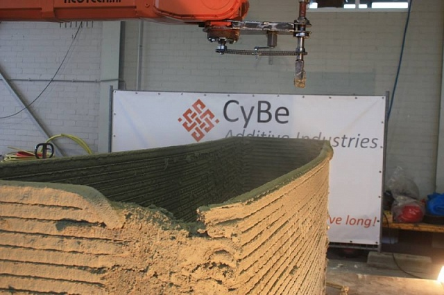
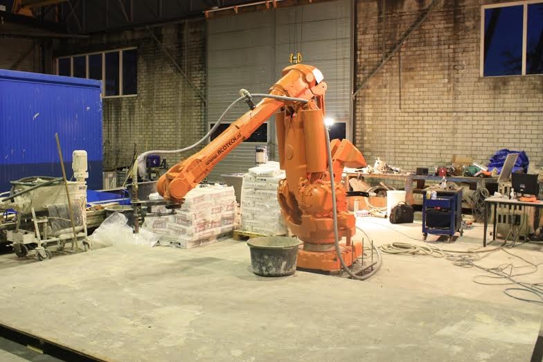
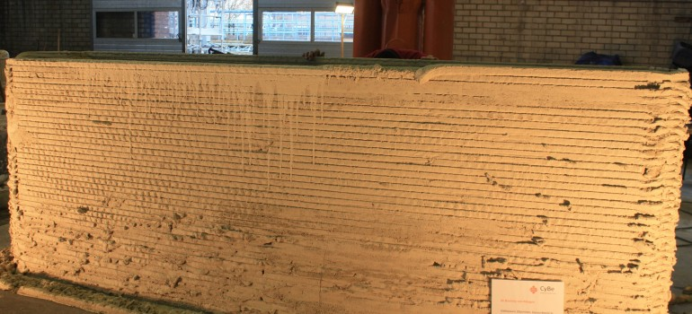

В Нідерландах розробили 3D-принтер, що друкує стіни з екологічно чистого бетону
Голландська компанія CyBe Additive Industries презентувала роботу своїх останніх винаходів. Розробники компанії створили інноваційний 3D-принтер-маніпулятор, що здатен будувати різні конструкції зі спеціального типу екологічно чистого бетону
Прототип робота-маніпулятора ProTo R 3DP має діапазон дії 3,15 м у всіх напрямках, і здатний видавлювати цемент зі швидкістю 175 мм/сек з друкуючої головки діаметром 30 мм (тобто, товщина кожного шару цементу складає 30 мм).
Крім того, створений голландцями пристрій можна доповнити спеціальними додатковими головками, після чого швидкість друку збільшиться до 4000 мм/сек.
Наразі компанія працює над створенням головки, яка дозволить друкувати шари бетону товщиною всього 5 мм.
Однак, найбільший інтерес викликає саме матеріла для друку – бетонний розчин від CyBe Additive Industries. В компанії стверджують, що матеріал здатен затвердіти протягом декількох хвилин. Склад цього розчину розробники тримають в секреті.
Особливо цікавить екологічна складова цього бетону. Справа в тому, що інноваційний розчин викидає в атмосферу на 32% менше вуглекислого газу в порівнянні зі звичайним бетоном. Крім того, бетон CyBe повністю підлягає вторинній переробці, що дозволить значно скоротити кількість відходів.
|